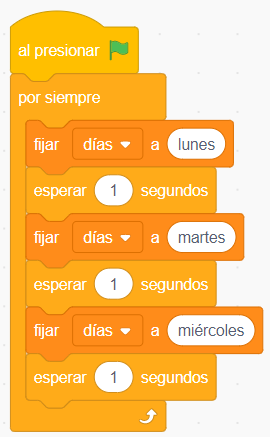
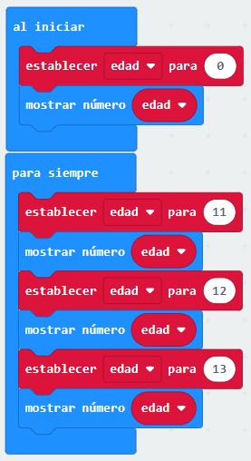
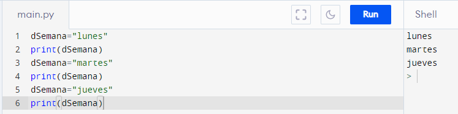

Scratch
En este ejemplo se puede observar cómo se asignan diferentes valores a la variable dentro del programa.

MakeCode
En este ejemplo se puede observar cómo se asignan diferentes valores a la variable dentro del programa.

Python
En este ejemplo se inicializa la variable con el valor "lunes". Luego se asignan los valores "martes" y "jueves".
Luego de cada asignación se despliega en pantalla el valor almacenado en la variable por medio del comando print().
